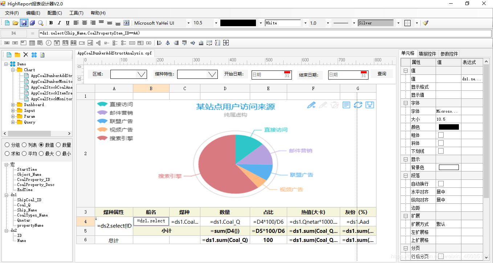

目前国产报表工具大部分都是Java版本，例如润乾和帆软，而C#写的报表工具国内还没有，介绍一款VS2010(C#)写的国产报表工具(highreport)，采用类Excel设计，零代码实现复杂报表展示、复杂表单填报、图表展示、参数面板、系统管理、大屏可视化、导出、打印等。

报表功能：
1.报表采用类似Excel操作方式制作报表模版，简单易操作
2.报表支持多种关型系数据库（ Oracle、SQL Server、MySQL、SQLite、PostgreSQL、Access、Excel 等）
3.报表支持各种报表类型查询（自由报表、网格式报表、交叉报表、分组报表、主子报表、分栏报表、分页报表等）
4.报表支持各种报表类型填报（自由填报、网格式填报、行式填报、交叉填报、分组填报、主子填报、组合填报等）
5.报表支持报表参数条件自定义设置，支持18种查询条件过滤
6.报表支持大屏可视化功能
7.报表支持百度ECharts2.0,3.0,4.0图表集成展示
8.报表支持强大的表达式内置引擎，支持100多种内置函数
9.报表支持富文本、图片、二维码、条形码等类型展示
10.报表支持导出Excel、Word、Pdf
11.报表支持程序二次开发
12.报表支持移动App开发
13.报表支持Web打印、Pdf打印、程序打印
更多信息看
链接：http://www.highreport.net
QQ群：872369705